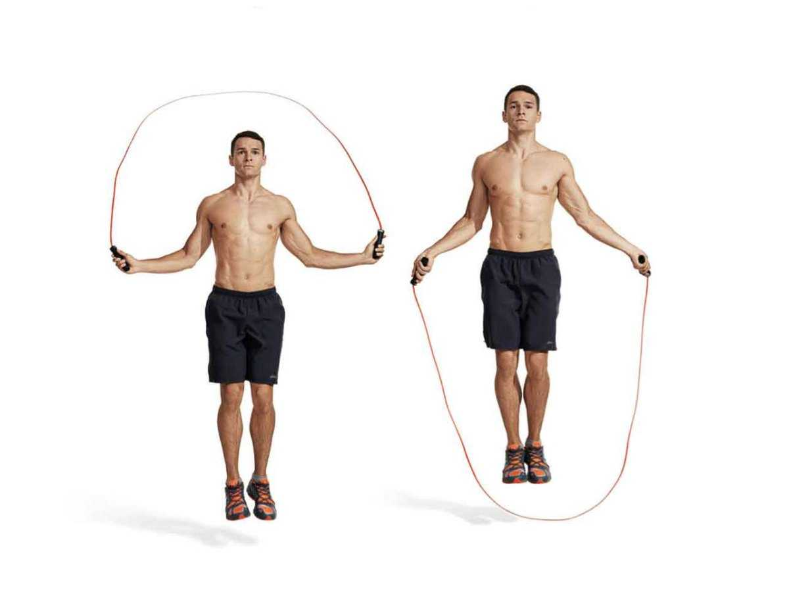

ТРЕНИРОВКИ
Кардио тренировка
Бег на месте: 3-5 минут.

Прыжки на скакалке: 2-3 минуты.
Боковые выпады: 10-12 повторений на каждую ногу.

Выпады назад: 10-12 повторений на каждую ногу.

Подъемы на платформу: 10-12 повторений.

Скакалка двойным оборотом: 2-3 минуты.

Бег на месте с высокими коленями: 2-3 минуты.

Велосипедные пресс: 10-12 повторений.

Бег на беговой дорожке или на улице: 10-15 минут.

Силовая тренировка
1. Приседания: постановка ног на ширине плеч, опускание бедер до параллельного положения, возвращение в
исходное положение. Повторить 3-4 подхода по 10-12 повторений.
2. Жим штанги на грудь: лежа на скамье, опускание штанги до уровня груди, возвращение в исходное
положение. Повторить 3-4 подхода по 8-10 повторений.
3. Тяга штанги к подбородку: стоя перед горизонтальной плоскостью (например, турником),
подтягивание штанги к подбородку, опускание. Повторить 3-4 подхода по 6-8 повторений.
4. Отжимания от пола: лежа на полу, подталкивание тела вверх, возвращение в исходное положение.
Повторить 3-4 подхода по 12-15 повторений.
5. Тяга верхнего блока: сидя на тренажере, хват верхнего блока, тянуть его к груди, возвращение
в исходное положение. Повторить 3-4 подхода по 10-12 повторений.
6. Пресс: подъем ног в висе на перекладине или касание лопаток коленями в положении лежа на
спине. Повторить 3-4 подхода по 12-15 повторений.
7. Фронтальное поднятие гантелей: стоя прямо, поднятие гантелей отдельно перед собой до уровня
плеч, опускание. Повторить 3-4 подхода по 10-12 повторений.
Йога
1. Начните с посадки в "Лотос" на коврике для йоги. Сядьте прямо, сведите ноги в позу Лотоса: правая
нога на левом бедре и левая нога на правом бедре. Руки положите на колени и закройте глаза. Сделайте
несколько глубоких вдохов и выдохов, чтобы расслабиться.
2. Переходите к "Горной позе" (Тадасана). Стойте прямо совсем, стопы вместе, руки внизу по
бокам. Вдохните и поднимите руки вверх вдоль ушей, одновременно выпрямляя руки вверх, вытягиваясь как
можно выше. Удерживайте позу на несколько секунд и затем медленно опустите руки вниз, выдохнув.
3. Выполните "Позу собаки мордой вниз" (Адхо Мукха Шванасана). Перейдите на все четыре и станьте
в позицию, при этом руки должны быть прямыми, ладони плоско помещены на коврике для йоги, а пятки хорошо
прижаты к коврику. Растяните спину и постарайтесь опустить голову между руками. Удерживайте позу на
несколько дыханий.
4. Перейдите в "Позу дерева" (Врикшасана). СоСтаньте на одной ноге, а другую ногу изогните в
колене и прижмите стопу к внутренней стороне бедра. Спокойно поднимите руки вверх над головой и
удерживайте позу на несколько дыханий. Затем повторите на другой ноге.
5. Завершите тренировку йоги, принимая "Позу ребенка" (Баласана). Сядьте на колени на коврике,
потом наклонитесь вперед, облокотившись на пол перед собой и опустите голову на пол. Руки расслабьте
вдоль тела. Удерживайте позу и наслаждайтесь расслаблением и растяжением спины.
Пилатес
1. Начните с небольшого изогнутого положения на мате. Сядьте на ягодицы, ноги прямые, руки упираются в
пол.
2. Вдохните, подтяните стопы и вытяните позвоночник ровную линию вверх. В то же время поднять
руки вверх, растягивая вверх от поясницы. Сделайте пять глубоких вдохов и выдохов в этом положении.
3. Затем лежа на спине, согните колени и поставьте стопы на пол, руки можно положить вдоль тела.
Вдохните и поднимите таз вверх в направлении потолка, сжав ягодицы и принимая положение мостика. Задние
бедра и корватые мышцы должны быть активированы.
4. На выдохе медленно опустите таз на пол, выпрямляя одну ногу вверх в направлении потолка.
Сделайте это сменно для каждой ноги. Повторите 8-10 раз для каждой ноги.
5. Вернитесь на пол и сложите руки на груди. Вытянитесь и приподнимите плечи и голову от пола,
сжимая пресс. Удерживайте это положение на счет до пяти, затем медленно опуститесь обратно на пол.
Повторите 10-12 раз.
6. Далее, на четвереньках, сделайте упражнение "кошка-корова". Вдохните, опустите живот к полу,
сутулитесь и поднимите голову вверх. Затем на выдохе округлите спину, поверните голову вниз и подтяните
живот к позвоночнику. Повторите эту последовательность 8-10 раз.
7. Закончите тренировку лежа на спине, согнув колени и загнув их в сторону груди. Дернитесь
немного с одного бока на другой, массируя спину. Вдохните и выдохните, расслабьтесь и отдохните.
8. После тренировки расслабьтесь в положении "мёртвой точки", лежа на спине, расслабьте все
мышцы и сосредоточьтесь на дыхании.